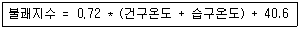
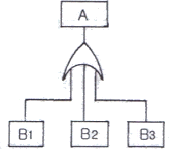
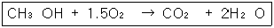

산업안전산업기사 (2007-03-04 기출문제)
1과목: 산업안전관리론
1. 다음 중 방독 마스크의 사용을 금지하는 경우로 옳은것은?
- 페인트를 제조할 때
- 소방작업을 할 때
- 갱내의 산소가 결핍되었을 때
- 이산화질소가 존재할 때
(정답률: 80%)

2. 부주의 발생현상 중 질병의 경우에 주로 나타나는 것은?
- 의식의 단절
- 의식의 우회
- 의식 수준의 저하
- 의식의 과잉
(정답률: 45%)
3. 산업안전표지에서 안내표지 중 세안장치의 기본모형 형태는?
- 사각형
- 원형
- 삼각형
- 마름모형
(정답률: 54%)
4. 근로시간 1000시간당 재해에 의해서 상실되는 근로 손실일수를 뜻하고 있는 재해율은?
- 강도율
- 도수율
- 연천인율
- 종합재해지수
(정답률: 57%)
5. 교육계획 작성시 가장 먼저 고려되어야 할 사항은?
- 교육대상
- 교육일정
- 교육장소
- 평가계획
(정답률: 78%)
6. 재해 빈발자에대한 분류 중 작업이 어렵거나 설비의 결함 때문에 발생되는재해자는 다음 중 어느 유형에 해당되는가?
- 소실성 빈발자
- 상황성 빈발자
- 습관성 빈발자
- 미숙성 빈발자
(정답률: 72%)
7. 다음 중 안전관리 조직으로 볼 수 없는 것은?
- 라인 조직
- 참모식 조직
- 수평조직
- 라인,참모식조직
(정답률: 83%)
8. Off.J.T(Off Job Training)의 특징이 아닌 것은?
- 전문가를 초빙하여 강사로 활용이 가능하다
- 많은 지식,경험을 교류할 수 있다.
- 다수의 근로자들에게 조직적 훈련이 가능하다
- 직장의 실정에 맞게 실제적 훈련이 가능하다.
(정답률: 62%)
9. 하베이(Harvey)의 안전 시정책 3E와 관계가 먼것은?
- 시설 및 장비의 개선(Engineerimg)
- 교육 및 훈련(Education & Training)
- 경비절감(Economic)
- 감독철저(Enforcement)
(정답률: 75%)
10. 75명의 근로자가 공장에서 1일 8시간, 연간 320일을 작업하는 동안에 6건의 재해가 발생하였다면 이공장의 도수율은 얼마인가?
- 17.62
- 26.04
- 31.25
- 33.33
(정답률: 63%)
11. 교육훈련기법 중 회사에 대한 일체감이나 대인관계를 교육내용으로 하는 것은?
- 기능에 관한 교육
- 지식에 관한 교육
- 태도에 관한 교육
- 환경에 관한 교육
(정답률: 61%)
12. 매슬로우(Maslow)의 욕구 5단계 중 인간이 갖고자 하는 최고의 욕구는 어는 것인가?
- 자아실현의 욕구
- 사회적인 욕구
- 안전의 욕구
- 생리적인 욕구
(정답률: 73%)
13. 보호구에서 안전대의 종류와 관계없이 사용구분이 “추락방지대”인 등급은?
- 2종
- 3종
- 4종
- 5종
(정답률: 22%)
14. 재해발생의 배후 요인에는 4M이 있다. 이 가운데 작업 정보,작업방법 등과 가장 관계가 깊은 것은?
- 관리(Management)
- 기계.설비(Machine)
- 인간(Man)
- 매체(Media)
(정답률: 62%)
15. 가죽제 안전화의 성능시험 항목에 해당되지 않는 것은?
- 내압박성
- 내충격성
- 내전압
- 박리저항
(정답률: 39%)
16. 무재해운동을 추진하기 위한 3요소가 아닌 것은?
- 안전활동의 라인화
- 직장(소집단)의 자주적인 활동의 활성화
- 전 종업원의 안전 요원화
- 최고경영자의 무재해, 무질병에 대한 확고한 경영자세
(정답률: 55%)
17. 다음 기업내 안전교육중 TWI의 훈련내용이 아닌것은?
- 작업방법훈련(JMT)
- 작업지도훈련(JIT)
- 사례연구훈련(CST)
- 인간관계훈련(JRT)
(정답률: 69%)
18. 의식이 명확하고 사물을 적극적으로 받아들이려고 하는 상태의 의식단계(Phase)는?
- Phase Ⅰ
- PhaseⅡ
- Phase Ⅲ
- PhaseⅣ
(정답률: 57%)
19. 어느 사업장의 재해도수율이 10.83이고 재해강도율이 7.92일때 종합재해지수(FSI)는 얼마인가?
- 4.63
- 6.342
- 9.26
- 12.84
(정답률: 60%)
20. 리더쉽의 권한 중 목표 달성을 위하여 부하 직원들이 상사를 존경하여 상사와 함께 일하고자 할 때 상사에게 부여되는 권한을 무엇이라 하는가?
- 보상적 권한
- 강압적 권한
- 합법적 권한
- 위임된 권한
(정답률: 66%)
2과목: 인간공학 및 시스템안전공학
21. 수평작업대 설계에 있어서 최대작업역에 대한 설명으로 옳은 것은?
- 전완만으로 편하게 뻗어 파악할 수 있는 구역
- 전완과 상완을 곧게 펴서 파악할 수 있는 구역
- 상완만을 뻗어 파악할 수 있는 구역
- 사지를 최대한으로 움직여 파악할 수 있는 구역
(정답률: 62%)
22. 다음 중 인간 실수확률에 대한 추정기법이 아닌 것은?
- 계층분석모델
- 위급사건기법
- 직무 위급도 분석
- 조작자 행동나무
(정답률: 31%)
23. 다음 중 통제비와 관련이 없는 것은?
- C/D비 라고도 한다.
- 최적통계비는 이동시간과 조정시간의 교차점이다
- Maslow와 관련이 깊다.
- 통제기기와 시각표시 관계를 나타내는 비율이다
(정답률: 64%)
24. 다음 중 골격(뼈)의 주요 기능이 아닌 것은?
- 신체를 지지하고 형상을 유지하는 역할
- 주요한 부분을 보호하는 역할
- 신체활동을 수행하는 역할
- 유기질을 저장하는 역할
(정답률: 69%)
25. 다음 중 시스템(제품)의 고유신뢰도를 높이기 위하여 가장 중요한 것은?
- 설계 개선
- 작업자에 대한 교육
- 철저한 최종 검사
- 사용자에 대한 교육훈련
(정답률: 42%)
26. 근골격계질환의 인간공학적 주요 위험요인이 아닌 것은?
- 부적절한 자세
- 다습한 환경
- 과고한 힘
- 단시간의 많은 반복
(정답률: 78%)
27. FT(Fault Tree)도를 작성할 때 일반적으로 최하단에 사용되지 않는 사상은?
- 결함사상
- 통상사상
- 기본사상
- 생략사상
(정답률: 34%)
28. 인간에 대한 모니터링 방법 중 피로,교통,권태 등의자각에 의해서 자신의 상태를 알고 행동하는 감시방법은?
- Self-monitoring 방법
- 생리학적 monitoring 방법
- Visual monitoring 방법
- 반응에 대한 monitoring 방법
(정답률: 60%)
29. 60fL의 광도를 요하는 시각 표시장치의 반사율이 75% 일때 소요조명은 몇 fc인가?
- 75
- 80
- 85
- 90
(정답률: 50%)
30. 다음 설명 중 틀린 것은?
- 인간의 실수는 우발적으로 재발하는 유형이다.
- 기계나 설비(hardware)의 고장조건은 저절로 복구되지 않는 것이다.
- 인간은 기계와 달리 학습에 의해 계속적으로 성능을 향상시킨다
- 인간의 성능과 압박(stress)은 선형 관계를 가져 압박이 중간 정도일 때 성능수준이 가장 높다.
(정답률: 50%)
31. 기계의 통제를 위한 통제기기의 선택조건이 아닌 것은?
- 계기의 지침은 일치성이 있어야 한다.
- 식별이 어려운 통제기기를 선택해야 한다.
- 특정 목적에 사용되는 통제기기는 여러 개를 조합하여 사용하는 것이 좋다.
- 통제기기가 복잡하고 정밀한 조절이 필요한 때에는 멀티로테이션 컨트롤 기기를 사용하는 것이 좋다.
(정답률: 70%)
32. 어떤 작업의 평균 에너지값이 5kcal/min라고 했을때 1시간 작업시 휴식시간은 약 몇분이 필요한가? (단, 기초대사를 포함한 작업에 대한 평균에너지 값의 상한은 4kcal/min, 휴식시간에 대한 평균에너지 값은 1.5kcal/min이다)
- 15
- 18
- 21
- 24
(정답률: 43%)
33. 어떤 물체나 표면에 도달하는 빛의 단위 면적당 밀도를 무엇이라 하는가?
- 광량
- 조도
- 광도
- 반사율
(정답률: 59%)
34. 검사공정의 작업자가 제품의 완성도에 대한 검사를 하고 있다. 어느 날 10000개의 제품에 대한 검사를 실시하여 200개의 부적합품(불량품)을 발견하였으나, 이 Lot 에는 실제로 500개의 부적합품(불량품)이 있었다. 이 때 인간과오확률(,Human Error Probability)은 얼마인가?
- 0.02
- 0.03
- 0.04
- 0.⑤
(정답률: 61%)
35. 안전표지에 사용되는 색채 중“노랑”의 용도는?
- 지시
- 안내
- 경고
- 금지
(정답률: 68%)
36. 일반적으로 인첸에 가해지는 온,습도 및 기류 등의 외적변수를 종합적으로 평가하는 데에는 “불쾌지수”라는 지표가 이용된다. 식이 다음과 같은 경우 건구온도와 습도온도의 단위로 옳은 것은?(불쾌지수 = 0.72*(건구온도+습구온도)+40.6)

- 섭씨온도
- 화씨온도
- 절대온도
- 실효온도
(정답률: 63%)
37. 일반적으로 인체 계측 자료를 설계에 응용할 때의 내용으로 잘못된 것은?
- 선반 높이의 설계를 위하여 5%의 하위 백분위 수를 사용하였다.
- 조종 자치까지의 거리 설계를 위하여 5%의 하위 백분위 수를 사용하였다.
- 출입문의 설계를 위하여 5%의 하위 백분위 수를 사용하였다.
- 비상벨의 위치 설계를 위하여 5%의 하위 백분위 수를 사용하였다,
(정답률: 45%)
38. 인간 - 기계 체계의 기본 기능 중 내려진 의사결정의 결과로 발생하는 조작 행위를 일컫는 기능은?
- 정보감지 기능
- 정보보관 기능
- 정보처리 및 의사결정 기능
- 행동기능
(정답률: 42%)
39. 다음 중 결함수 분석기법(FTA)에 관한 설명으로 틀린 것은?
- 최초 Watson이 군용으로 고안하였다.
- 미니멀 패스(Minimal path sete)를 구하기 위해서는 미니멀 컷(minimal cut sets)의 상대성을 이용한다
- 정상사상의 발생확률을 구한 다음 FT를 작성한다
- AND게이트의 확률 계산은 입력사상의 곱으로 한다
(정답률: 53%)
40. 다음 FT도에서 사상 A가 발생할 확률은? (단, 각 사상의 발생할 확률은 B1은 0.1, B2는 0.2, B3는 0.3 으로 계산한다)

- 0.006
- 0.496
- 0.604
- 0.804
(정답률: 61%)
3과목: 기계위험방지기술
41. 아세틸렌 용접장치를 사용하여 금속의 용접,용단 또는 가열 작업시 게이지 압력은 얼마를 초과하여 아세틸렌을 발생시켜 사용해서는 안되는가?
- 127kPa
- 147kPa
- 196kPa
- 206kPa
(정답률: 53%)
42. 크레인(crane)의 방호장치중 권과 방지 장치에 사용되는 것은?
- 완충장치
- 리밋스위치
- 브레이크장치
- 행거스위치
(정답률: 47%)
43. 보일러에서 압력제한 스위치의 역할은?
- 최고 사용압력과 상용압력 사이에서 보일러의 버너 연소를 차단
- 최고 사용압력과 상용압력 사이에서 급수펌프 작동을 제한
- 최고 사용압력 도달시 과열된 공기를 대기에 방출하여 압력 조절
- 위험압력시 버너. 급수펌프 및 고저 수위조절 장치 등을 통제하여 일정압력 유지
(정답률: 46%)
44. 클러치 맞물림 개소가 4개, 200SPM(Stroke Per Minute) 동력 프레스의 양수조작식 안전장치의 거리는?
- 80(㎜)
- 120(㎜)
- 240(㎜)
- 360(㎜)
(정답률: 35%)
45. 로울러기에 설치하여야 하는 급정지 장치의 종류가 아닌 것은?
- 손으로 조작하는 것
- 복부로 조작하는 것
- 무릎으로 조작하는 것
- 발로 조작하는 것
(정답률: 63%)
46. 다음중 프레스의 방호장치에 해당 되지 않는 것은?
- 손쳐내기식(Sweep Guard)
- 수인식(Pull Out)
- 게이트 가드(Gate Guard)
- 롤 피드(Roll Feed)
(정답률: 69%)
47. 세이퍼 작업의 안전대책과 거리가 먼 것은?
- 바이트는 가능한 한 짧게 물린다.
- 시동전에 행정 조정 손잡이는 빼둔다.
- 운전 중 필요할 때마다 가공면의 거칠기를 손으로 점검한다
- 가공물을 측정하고자 할 때는 기계를 정지시킨 후에 실시한다
(정답률: 75%)
48. 압력용기에 설치하는 압력방출장치의 작동 설정점은?
- 상용압력 초과시
- 최고사용압력 이전
- 최고사용압력 초과시
- 최고사용압력의 110%
(정답률: 39%)
49. 칩브레이커(chip breaker)는 어느 목적으로 이용되는 것인가?
- 취성 금속을 밀링 가공할 때 커터 윗면에 파서 칩을 유도하기 위한 것
- 연강을 선삭할 때 바이트 윗면에 연속 칩을 자르기 위하여 만든 것
- 주철을 절삭하는 세이퍼 윗면에 붙여 칩을 짧게 끊기 위한 것
- 공구 윗면의 마멸을 감소시키고 공구의 수명을 길게 하기 위한 것
(정답률: 48%)
50. 새 연삭 숫돌차를 교환 고정하는 방법으로서 틀린 것은?
- 고정 후 편심을 수정한다.
- 고정하기 전에 음향검사를 한다
- 숫돌차에 붙은 종이를 그대로 고정한다
- 사용 중에 풀리지 않도록 강하고 빠르게 조인다.
(정답률: 44%)
51. 기계설비 안전의 기본 원칙에서 기계나 그 부품에 고장이나 기능 불량이 생겨도 항상 안전하게 작동하는 안전화 대책은?
- fool proof
- fail safe
- 예방정비
- 진단
(정답률: 67%)
52. 용접 토치 팁의 청소는 무엇으로 해야 가장 좋은가?
- 놋쇠선
- 철선
- 전선케이블
- 팁클리너
(정답률: 78%)
53. 지게차 운전중의 주의사항으로 적합지 않는 것은?
- 견인시는 반드시 견인봉을 사용할 것
- 정해진 하중을 초과하여 적재하지 말 것
- 운전자 외에 한사람이상 필히 탑승할 것
- 급격한 후퇴는 피할 것
(정답률: 76%)
54. 사업주는 크레인의 하중 시험을 실시한 경우 그 결과를 몇 년간 보존해야 하는가?
- 6개월
- 1년
- 2년
- 3년
(정답률: 48%)
55. 많은 구멍을 뚫기 위한 다축 드릴링머신에서 형판에 의해 드릴을 유도하며 공작물을 항상 형판에 의해 정확한 위치에 체결하도록 놓는 일감 고정방법으로 가장 적합한 것은?
- 바이스를 이용한다
- 클램프를 이용한다.
- 볼트-너트를 이용한다
- 지그(jig)을 이용한다.
(정답률: 57%)
56. 드릴작업의 안전대책과 거리가 먼 것은?
- 칩은 날카롭기 때문에 와이어 브러쉬로 제거한다
- 구멍 끝 작업에서는 절삭압력을 주어서는 안된다.
- 칩에 의한 자상을 방지하기 위해 장갑을 이용한다.
- 고정구를 사용하여 작업중 공작물의 유동을 방지한다
(정답률: 74%)
57. 양중기(승강기 및 차량비용 간이리프트는 제외한다)의 자체검사 사항이 아닌 것은?
- 브레이크 및 클러치의 이상유무
- 훅 등 달기기구의 손상유무
- 와이어로프 및 달기체인의 손상유무
- 그밖의 부속장치의 부식 및 균열 등 이상유무
(정답률: 26%)
58. 안전율을 구하는 계산공식으로 적당한 것은?
- 극한강도-허용응력
- 허용응력/기초강도
- 극한강도*허용응력
- 기초강도/허용응력
(정답률: 46%)
59. 불순물이 포함된 물을 보일러 수로 사용하여 보일러의 관벽과 드럼 내면에 관석(Scale)이 부착하였다. 이로 인한 영향중 틀린 것은?
- 보일러의 효율 저하
- 보일러 수의 순환 저하
- 과열
- 불완전 연소
(정답률: 52%)
60. 기계부품에 작용하는 힘중에서 안전율을 가장 크게 취하여야 할 하중의 종류는?
- 반복하중
- 교번하중
- 충격하중
- 정하중
(정답률: 57%)
4과목: 전기 및 화학설비위험방지기술
61. 제3종 접지공사의 접지저항은 얼마인가?(관련 규정 개정전 문제로 여기서는 기존 정답인 2번을 누르면 정답 처리됩니다. 자세한 내용은 해설을 참고하세요.)
- 10Ω 이하
- 100Ω 이하
- 150Ω 이하
- 300Ω 이하
(정답률: 51%)
62. 다음 화재의 기호와 설명으로 틀린 것은?
- A급 - 일반화재
- B급 - 유류화재
- C급 - 전기화재
- D급 - 가스화재
(정답률: 74%)
63. 화약류 또는 위험물의 저장이나 취급하는 시설물에 피뢰침을 설치할 때 준수사항으로 틀린 것은?
- 보호각은 45도 이하로 할 것
- 접지극과 대지간의 접지저항은 10Ω 이하로 할 것
- 피뢰도선은 단면적이 10mm2 이상인 동선을 사용할 것
- 가연성 가스 등의 저장시설물로부터 1.5미터 이상 떨어진 장소에 설치 할 것
(정답률: 29%)
64. 분진폭팔에 관한 설명 중 옳지 않은 것은?
- 분진폭발은 가스폭발에 비하여 유독물의 발생이 많다
- 분진폭발은 가스폭발과 마찬가지로 폭발범위가 존재한다
- 분진폭발은 실내를 건조시켜 점화원을 제거하는 것이 가장 효과적인 폭발방지책이다
- 금속분말도 분진폭발을 일으킨다.
(정답률: 54%)
65. 산업안전보건법에서 정하는 폭발위험장소의 분류중 1종 장소에 해당하는 것은?
- 용기,장치,배관 등의 내부
- 맨홀,벤트,피트 등의 주위
- 개스킷,패킹 등의 주위
- 호퍼.분진저장소 등의 내부
(정답률: 33%)
66. 사료공장, 금속가공공장, 종이공장 및 섬유공장에서 공통적으로 일어날 수 있는 재해는?
- 분진폭발
- 금수성물질의 화재
- 증기폭발
- 액상폭발
(정답률: 63%)
67. 휘발유를 저장하던 이동저장탱크에 등유나 경유를 탱크 상부로부터 주입할 때 액 표면이 일정 높이가 될 때까지 위험물의 주입관내 유속은 몇 ㎧ 이하로 하여야 하는가?
- 1.0
- 1.5
- 2.0
- 2.5
(정답률: 62%)
68. 저압전선로 중 절연부준의 전선과 대지간 및 전선의 심선 상호간의 절연저항은 사용전압에 대한 누설전류가 최대 공급전류의 얼마를 넘지 않아야 하는가?
- 1/1000
- 1/1500
- 1/2000
- 1/2500
(정답률: 52%)
69. 액체가 관내를 이동할 때에 정전기가 발생하는 현상은?
- 마찰대전
- 박리대전
- 분출대전
- 유동대전
(정답률: 71%)
70. 용기 내부에 아크 또는 고열이 발생하여 폭발이 일어날 경우에 용기가 폭발압력에 견디고, 외부의 폭발성 가스에 인화될 위험이 없도록 하는 방폭구조는?
- 내압 방폭구조
- 비점화 방폭구조
- 안전증 방폭구조
- 특수 방진 방폭구조
(정답률: 61%)
71. 메탄올의 연소반응이 다음과 같을 때 최소산소농도(MOC)는 약 얼마인가? (단, 메탄올의 연소하한값(L)은 6.7vol%이다)

- 1.5vol%
- 6.7vol%
- 10vol%
- 15vol%
(정답률: 34%)
72. 다음의 소화방법 중에서 액체의 증발잠열을 이용하여 소화시키는 것으로 물을 이용하는 방법은 주로 어떤 소화방법에 해당되는가?
- 냉각소화법
- 연소억제법
- 제거소화법
- 질식소화법
(정답률: 69%)
73. 사용전압이 150V 를 초과하고, 300V 이하인 전로의 전선 상호간 및 전로와 대지간의 절연저항은 얼마 이상이어야 하는가?
- 0.1㏁
- 0.2㏁
- 0.3㏁
- 0.4㏁
(정답률: 64%)
74. 산업안전보건법에서 정하는 화학설비 및 그 부속설비에 대한 자체 검사 주기는?
- 분기별 1회 이상
- 6개월에 1회 이상
- 1년에 1회 이상
- 2년에 1회 이상
(정답률: 23%)
75. 내압(耐壓)방폭구조에서 방폭전기기기의 폭발등급에 따른 최대안전틈새의 범위(㎜) 기준으로 옳은 것은?
- ⅡA - 0.65 이상
- ⅡA - 0.5 초과 0.9 미만
- ⅡC - 0.25 미만
- ⅡC - 0.5 이하
(정답률: 27%)
76. 물체의 정전용량이 1.5㎌이고, 마찰로 인한 정전기 에너지가 2.5J로 주어졋다면 이 물체에 대전된 전위는 약 몇 V인가?
- 1.63 * 102
- 1.83 * 102
- 1.63 * 103
- 1.83 * 103
(정답률: 31%)
77. 다음 중 건조한 공기중에서 방전이 일어나면 발생하는 기체로 분자량이 약 48인 물질은?
- CO2
- O2
- H2
- O3
(정답률: 54%)
78. 다음 중 조혈기관 장해의 주된 요인이 되는 유해성 물진은?
- 벤젠
- 유기수은
- 망간
- 카드뮴
(정답률: 45%)
79. 접지의 종류와 목적에 대한 설명으로 틀린 것은?
- 계통 접지: 고압전로와 저압전로가 혼촉되었을 때 강전 및 화재 방지
- 피뢰 접지: 낙뢰로부터 전기기기의 손상방지
- 기기 접지: 누전되고 있는 기기에 접촉시의 감전방지
- 등전위 접지: 정전기의 축적에 의한 폭발방지
(정답률: 59%)
80. 여러 가지 성분의 액체 혼합물을 각 성분별로 분리하고자 할 때 비점의 차이를 이용하여 감압 또는 가압하에서 분리하는 화학설비를 무엇이라 하는가?
- 건조기
- 반응기
- 증발관
- 증류탑
(정답률: 66%)
5과목: 건설안전기술
81. 건설업 산업안전보건관리비 사용내역에 해당 되지 않는 것은?
- 안전관리자의 인건비
- 추락방지용 안전시설비
- 각종 개인보호구의 구입,수리,관리 등에 소요되는비용
- 안전담당자 업무수당 외의 인건비
(정답률: 60%)
82. 거푸집동바리 등을 조립할 때 강재와 강재의 접속부 또는 교차부를 연결시키기 위한 전용철물은?
- 가재
- 섀클
- 클램프
- 장선
(정답률: 62%)
83. 해체 작업용 화약류에 속하지 않는 것은?
- 저폭속 파쇄약
- 저폭속 폭약
- 팽창제
- 다이나마이트
(정답률: 56%)
84. 안전보건관리책임자를 두어야 할 건설업(공사)의 규모와 노동부 장관에게 이를 증명할 수 있느 서류 제출시기에 대한 기준으로 옳은 것은?
- 총공사금액 2억원 이상, 선임한 날로부터 7일이내
- 총공사금액 2억원 이상, 선임한 날로부터 14일이내
- 총공사금액 20억원 이상, 선임한 날로부터 7일이내
- 총공사금액 20억원 이상, 선임한 날로부터 14일이내
(정답률: 35%)
85. 거푸집에 작용하는 하중 중에서 연직하중이 아닌것은?
- 거푸집의 자중
- 작업원의 작업하중
- 가설설비의 충격하중
- 콘크리트의 측압
(정답률: 64%)
86. 안전난간의 구조 및 설치요건에 대한 기준으로 틀린 것은?
- 상부난간대는 경사로의 표면으로부터 90센티미터 이상 120센티미터 이하에 설치한다
- 발끝막이판은 바닥면으로부터 10센티미터 이상의 높이를 유지한다.
- 난간대는 지름 2센티미터 이상의 금속제파이프나 그 이상의 강도를 가진 재료로 한다.
- 안전난간은 임의의 점에서 임의의 방향으로 움직이는 100킬로그램의 이상의 하중을 견딜 수 있는 구조로 한다
(정답률: 53%)
87. 단면이 20㎝ * 20㎝, 길이가 7m 인 기둥에 10ton의 압축력이 축방향으로 작용할 때 압축응력은?
- 320 ton/m2
- 250 ton/m2
- 200 ton/m2
- 100 ton/m2
(정답률: 44%)
88. 추락에 의한 위험방지 조치사항으로 거리가 먼것은?
- 투하설비 설치
- 작업발판 설치
- 추락방지망 설치
- 근로자에게 안전대 착용
(정답률: 67%)
89. 쇼벨계 굴착기계에 속하지 않는 것은?
- 파워쇼벨(power shovel)
- 크램셀(clamshell)
- 스크레이퍼(scraper)
- 드래그라인(dragline)
(정답률: 57%)
90. 다음의 승강장치 중 데릭의 종류에 속하지 않는 것은?
- 가이 데릭
- 케이블 데릭
- 진풀 데릭
- 삼각 데릭
(정답률: 41%)
91. 사업주가 추락에 의하여 근로자에게 위험을 미칠 우려가 있을 때 비계를 조립하는 등의 방법에 의하여 작업발판을 설치하여 추락방지 조치를 해야 할 최소 높이는?
- 2m
- 3m
- 4m
- 5m
(정답률: 60%)
92. 다음 중 붕괴사고의 직접적인 방지대책과 가장 거리가 먼 것은?
- 우수(雨水), 지하수 등의 사전배제
- 가스분출 검사
- 안전경사 유지
- 토사유출 방지
(정답률: 51%)
93. 구조물 작업에서의 위험요인과 재해형태가 가장 관련이 적은 것은?
- 자재적재 및 통로 미확보--전도
- 개구부 안전난간 미설치-추락
- 벽돌 등 중량물 취급 작업-협착
- 항만 하역 작업-질식
(정답률: 59%)
94. 다음 터널 공법 중 전단면 기계 굴착에 의한 공법에 속하는 것은?
- ASSM(American Steel Supported Method)
- NATM(New Austrian Tunnelin Method)
- TBM(Tunnel Boring Machine)
- 개착식 공법
(정답률: 58%)
95. 광관틀 비계 조립시 높이가 최소 몇 m를 초과하는 경우에 주틀간의 간격을 1.8m 이하로 하여야 하는가?
- 15m
- 20m
- 25m
- 30m
(정답률: 38%)
96. 수직갱에 가설된 통로의 길이가 15m 이상인 때에는 매 10m마다 무엇을 설치해야 하는가?
- 손잡이
- 계단참
- 클램프
- 미끄럼방지 조치
(정답률: 69%)
97. 철골작업시 작의 제한 기준으로 옳은 것은?
- 풍속이 초당 10미터 이상인 경우
- 풍속이 초당 30미터 이상인 경우
- 강설량이 분당 1밀리미터 이상의 경우
- 강설량이 분당 1센티미터 이상의 경우
(정답률: 52%)
98. 다음 중 버팀대(Strut)의 변형을 측정하는 계측기는?
- 경사계(lnclino meter)
- 수위계(water level meter)
- 침하계(Extension)
- 하중계(Load cell)
(정답률: 51%)
99. 유해,위험 방지 계획서를 작성하는 자격 요건에 해당되지 않는 것은?
- 건설안전분야 산업안전지도사
- 건설안전기술사
- 건선안전산업기사 이상으로서 실무경력 7년인 자
- 건설안전기사로서 실무경력 4년인 자
(정답률: 53%)
100. 거푸집동바리 조립도에 명시해야 할 사항과 가장 거리가 먼 것은?
- 부재의 재질
- 단면규격
- 설치간격
- 작업 환경 조건
(정답률: 56%)